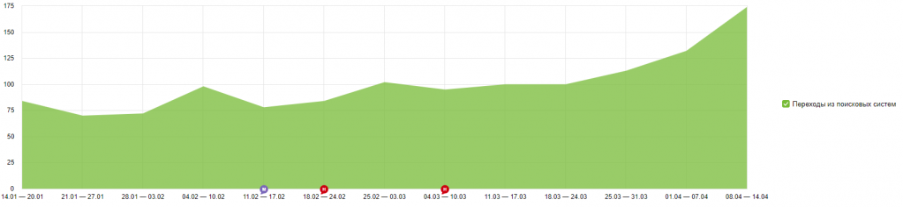
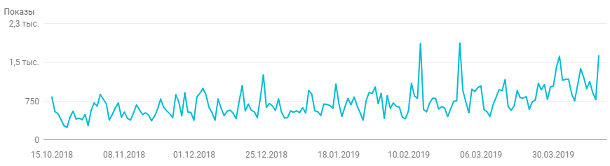
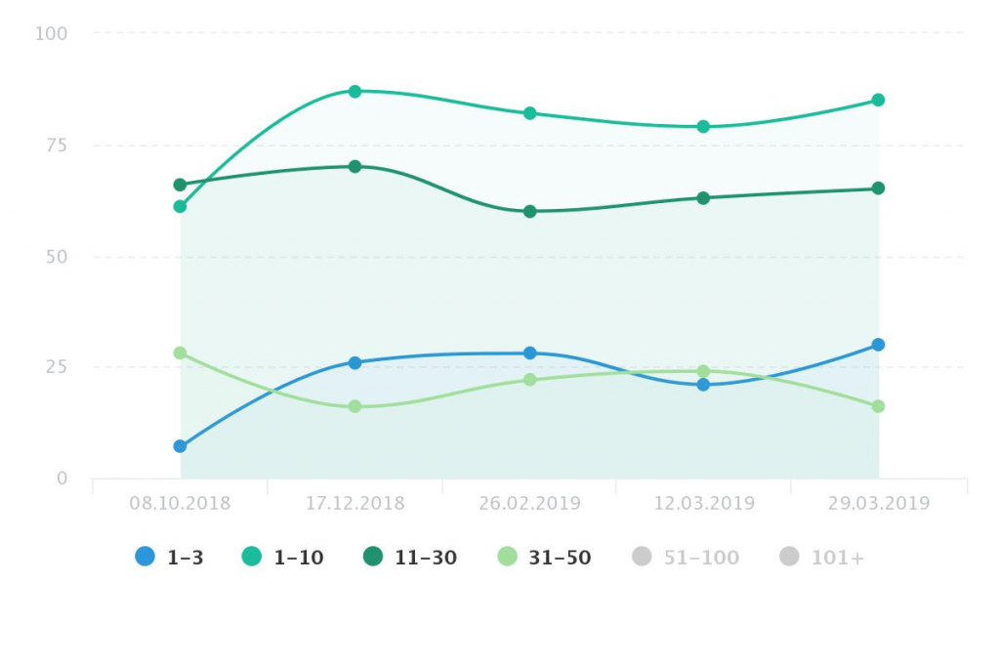
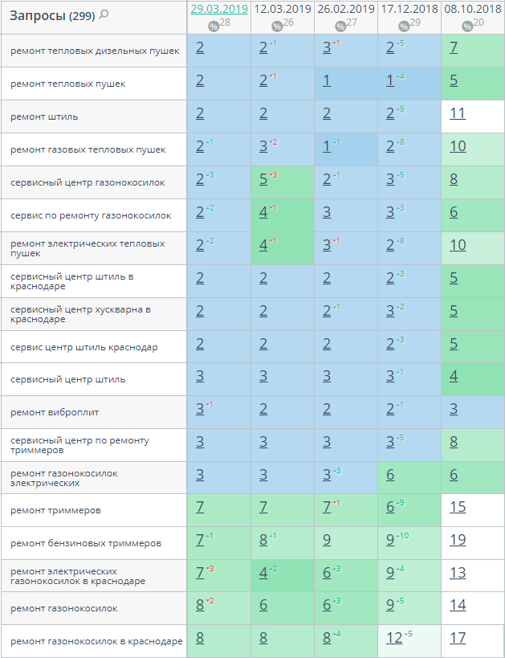

О проекте
О клиенте
Компания специализируется на продаже, прокате, сервисном обслуживании и послегарантийном ремонте садового инструмента, строительной техники и дизельных генераторов.
Задачи
Привлечь на сайт как можно больше аудитории по тематическим запросам, предоставить наиболее полную информацию об услугах копмании и конвертировать посетителя в клиента посредством заполнения формы обратной связи, или обращения в компанию по номеру телефона и напрямую.
Проведеные работы по оптимизации сайта
- Доработка каталога сайта
- По согласованию с клиентом было выбрано основное направление продвижения: Ремонт и сервисное обслуживание оборудования. Под эту тематику был создан ряд страниц сайта.
- Составление семантического ядра по небрендовым запросам
- Анализ поведенческих факторов и доработки сайта, направленные на улучшение юзабилити
- Корректировка мета-тегов и описания главной страницы, в соответствии с выбранными приоритетами
- Составление тегов Title и мета-тегов Description для всех страницах сайта
- Корректировка заголовков H1-H2
- Актуализация данных в Яндекс.Справочние (получение знака «Информация подтверждена владельцем»)
- Для всех видов услуг, а также категорий товаров написаны уникальные тексты описания
- Размещение ссылок на сайт, на тематических и информационных сайтах
- Исправлены проблемы с индексацией сайта
- Отслеживается функционал и работоспособность сайта
Динамика посещаемости и эффективность продвижения
Увеличение количества переходов из поисковых систем (согласно данных Яндекс.Метрики) более чем в 2 раза:

Увеличение числа показов сайта в поисковой выдаче по данным Google Search Console в 2,5-3 раза:

Динамика тематических поисковых запросов в поисковой системе Яндекс

Примеры поисковых запросов в топ 1-3, поисковой системы Google:

Заключение
Дальнейшая работа по сайту направлена на повышения удобства пользования сайтом, наращивание ссылочного профиля, а также видимости сайта в поисковых системах. Проводится регулярная проверка уникальности текстов, корректировка мета-тегов и отслеживание работоспособности сайта. Усиливается акцент на услугах компании, дополнительно развивая тему продажи оборудования.